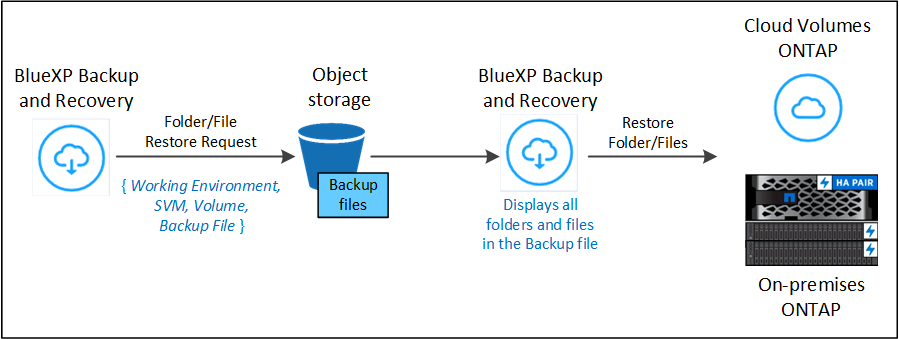
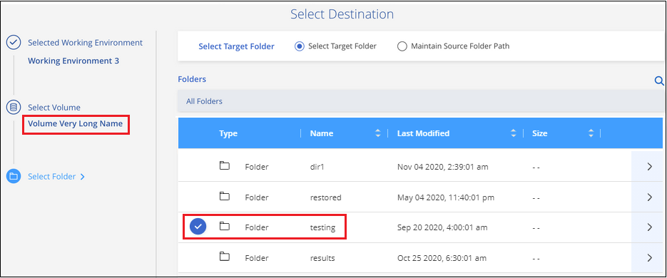

版本資訊
版本資訊
從備份檔案還原 ONTAP 資料
 建議變更
建議變更
您可以從建立備份的位置備份 ONTAP Volume 資料：快照複本、複寫磁碟區、以及儲存在物件儲存區的備份。您可以從這些備份位置的任何一個特定時間點還原資料。您可以從備份檔案還原整個 ONTAP 磁碟區、或者如果只需要還原幾個檔案、您可以還原資料夾或個別檔案。
-
您可以將* Volume *（新磁碟區）還原至原始工作環境、使用相同雲端帳戶的不同工作環境、或內部部署ONTAP 的內部系統。
-
您可以將*資料夾*還原至原始工作環境中的磁碟區、使用相同雲端帳戶的不同工作環境中的磁碟區、或還原至內部部署ONTAP 的S還原 系統上的磁碟區。
-
您可以將*檔案*還原至原始工作環境中的磁碟區、使用相同雲端帳戶的不同工作環境中的磁碟區、或還原至內部部署ONTAP 的S還原 系統上的磁碟區。
需要有效的 BlueXP 備份與還原授權、才能將資料從備份檔案還原至正式作業系統。
總結來說、這些是您可以用來將 Volume 資料還原至 ONTAP 工作環境的有效流程：
-
備份檔案 → 還原的磁碟區
-
複寫 Volume → 還原的 Volume
-
Snapshot copy → RESTORED Volume
還原儀表板
您可以使用還原儀表板來執行磁碟區、資料夾和檔案還原作業。若要存取「還原儀表板」、請按一下BlueXP功能表中的*備份與還原*、然後按一下*還原*索引標籤。您也可以按一下  >*從「服務」面板的「備份與還原」服務中檢視「還原儀表板」*。
>*從「服務」面板的「備份與還原」服務中檢視「還原儀表板」*。

|
至少必須為一個工作環境啟動 BlueXP 備份與還原、而且必須存在初始備份檔案。 |

如您所見、「還原儀表板」提供兩種不同的方法來還原備份檔案中的資料：瀏覽與還原*和*搜尋與還原。
比較瀏覽與還原、以及搜尋與還原
廣義而言、當您需要從上週或上月還原特定的磁碟區、資料夾或檔案時、_Browse & Restore通常會更好、而且您知道檔案的名稱和位置、以及檔案的最後保存日期。當您需要還原磁碟區、資料夾或檔案、但不記得確切的名稱、磁碟區所在的磁碟區、或是上次的狀態良好的日期時、_Search & Restore通常會更好。
此表提供兩種方法的功能比較。
| 瀏覽與還原 | 搜尋與還原 |
|---|---|
瀏覽資料夾樣式的結構、在單一備份檔案中尋找磁碟區、資料夾或檔案。 |
依部分或完整的磁碟區名稱、部分或完整的資料夾 / 檔案名稱、大小範圍及其他搜尋篩選器、在 * 所有備份檔案 * 之間搜尋磁碟區、資料夾或檔案。 |
如果檔案已刪除或重新命名、而且使用者不知道原始檔案名稱、則不會處理檔案還原 |
處理新建立/刪除/重新命名的目錄、以及新建立/刪除/重新命名的檔案 |
無需額外的雲端供應商資源 |
當您從雲端還原時、每個帳戶都需要額外的儲存庫和公有雲供應商資源。 |
無需額外的雲端供應商成本 |
當您從雲端還原時、掃描備份和磁碟區以取得搜尋結果時、需要額外成本。 |
支援快速還原。 |
不支援快速還原。 |
此表根據備份檔案所在的位置、提供有效還原作業的清單。
| 備份類型 | 瀏覽與還原 | 搜尋與還原 | ||||
|---|---|---|---|---|---|---|
* 還原 Volume * |
* 還原檔案 * |
* 還原資料夾 * |
* 還原 Volume * |
* 還原檔案 * |
* 還原資料夾 * |
|
Snapshot複本 |
是的 |
否 |
否 |
是的 |
是的 |
是的 |
複寫磁碟區 |
是的 |
否 |
否 |
是的 |
是的 |
是的 |
備份檔案 |
是的 |
是的 |
是的 |
是的 |
是的 |
是的 |
在使用任一還原方法之前、請先確定您的環境已針對獨特的資源需求進行設定。這些要求將在下節中說明。
請參閱您要使用的還原作業類型的需求與還原步驟：
-
<<Restoring ONTAP data using Search & Restore,使用Search Restore還原磁碟區、資料夾和檔案
使用「瀏覽與還原」還原 ONTAP 資料
開始還原磁碟區、資料夾或檔案之前、您應該知道要還原的磁碟區名稱、磁碟區所在工作環境和SVM的名稱、以及要還原的備份檔案的大約日期。您可以從 Snapshot 複本、複寫的磁碟區或儲存在物件儲存區的備份還原 ONTAP 資料。
-
附註： * 如果包含您要還原之資料的備份檔案位於歸檔雲端儲存設備（從 ONTAP 9.10.1 開始）、還原作業將需要較長的時間、而且會產生成本。此外、目的地叢集也必須執行 ONTAP 9.10.1 或更新版本才能進行磁碟區還原、 9.11.1 用於檔案還原、 9.12.1 用於 Google Archive 和 StorageGRID 、 9.13.1 用於資料夾還原。
|
|
將資料從Azure歸檔儲存設備還原StorageGRID 至支援的系統不支援高優先順序。 |
瀏覽及還原支援的工作環境和物件儲存供應商
您可以將 ONTAP 資料從位於次要工作環境（複寫磁碟區）或物件儲存（備份檔案）中的備份檔案還原至下列工作環境。Snapshot 複本位於來源工作環境中、只能還原至相同的系統。
-
注意： * 您可以從任何類型的備份檔案還原磁碟區、但目前只能從物件儲存區的備份檔案還原資料夾或個別檔案。
* 從物件存放區（備份） * |
* 來自主要（ Snapshot ） * |
* 來自次要系統（複寫） * |
目標工作環境 |
Amazon S3 |
AWS 中的 Cloud Volumes ONTAP |
AWS 中的 Cloud Volumes ONTAP |
Azure Blob |
Azure 中的 Cloud Volumes ONTAP |
Azure 中的 Cloud Volumes ONTAP |
Google Cloud Storage |
在 Google 中使用 Cloud Volumes ONTAP |
在Google內部部署中的系統資訊：Cloud Volumes ONTAP ONTAP GCP[] |
NetApp StorageGRID |
內部部署 ONTAP 的作業系統 |
內部部署 ONTAP 的作業系統 |
至內部部署 ONTAP 系統 |
SS3 ONTAP |
內部部署 ONTAP 的作業系統 |
內部部署 ONTAP 的作業系統 |
在瀏覽與還原中、連接器可安裝在下列位置：
-
對於Amazon S3、連接器可部署在AWS或內部部署環境中
-
若為僅供部分使用、連接器必須部署在內部部署、無論是否可存取網際網路StorageGRID
-
對於 ONTAP S3 、 Connector 可部署在內部部署（可存取或不存取網際網路）或雲端供應商環境中
請注意、「內部部署ONTAP 的功能系統」的參考資料包括FAS 了功能性的功能、包括了功能性的功能、包括了功能性的功能、AFF 功能性的功能、以及ONTAP Select 功能
|
|
如果系統上的 ONTAP 版本低於 9.13.1 、則如果備份檔案已設定 DataLock 和勒索軟體、則無法還原資料夾或檔案。在這種情況下、您可以從備份檔案還原整個磁碟區、然後存取所需的檔案。 |
使用瀏覽安培還原磁碟區；還原
當您從備份檔案還原磁碟區時、 BlueXP 備份與還原會使用備份的資料建立 new 磁碟區。使用物件儲存設備的備份時、您可以將資料還原至原始工作環境中的磁碟區、還原至與來源工作環境位於相同雲端帳戶的不同工作環境、或是內部部署 ONTAP 系統。
使用 ONTAP 9.13.0 或更新版本將雲端備份還原至 Cloud Volumes ONTAP 系統、或還原至執行 ONTAP 9.14.1 的內部部署 ONTAP 系統時、您可以選擇執行 quick restoration 作業。如果您需要儘快提供對磁碟區的存取、快速還原是災難恢復的理想選擇。快速還原可將中繼資料從備份檔案還原至磁碟區、而非還原整個備份檔案。不建議對效能或延遲敏感的應用程式進行快速還原、而且歸檔儲存設備中的備份不支援快速還原。
|
|
只有在建立雲端備份的來源系統執行 ONTAP 9.12.1 或更新版本時、 FlexGroup 磁碟區才支援快速還原。而且只有在來源系統執行 ONTAP 9.11.0 或更新版本時、 SnapLock Volume 才支援此功能。 |
從複寫的磁碟區還原時、您可以將磁碟區還原至原始工作環境、或還原至 Cloud Volumes ONTAP 或內部部署 ONTAP 系統。

如您所見、您必須知道來源工作環境名稱、儲存 VM 、 Volume 名稱和備份檔案日期、才能執行 Volume 還原。
下列影片顯示還原磁碟區的快速步驟：
-
從BlueXP功能表中、選取* Protection > Backup and recovery *。
-
按一下「還原」索引標籤、即會顯示「還原儀表板」。
-
在_瀏覽與還原_區段中、按一下*還原磁碟區*。

-
在_選取來源_頁面中、瀏覽至您要還原之磁碟區的備份檔案。選取*工作環境*、*磁碟區*和*備份*檔案、其中含有您要還原的日期/時間戳記。
「位置 * 」欄顯示備份檔案（ Snapshot ）是 * 本機 * （來源系統上的 Snapshot 複本）、 * 次要 * （次要 ONTAP 系統上的複寫磁碟區）、還是 * 物件儲存 * （物件儲存中的備份檔案）。選擇您要還原的檔案。

-
單擊 * 下一步 * 。
請注意、如果您在物件儲存區中選取備份檔案、且該備份的勒索軟體保護為作用中（如果您在備份原則中啟用 DataLock 和勒索軟體保護）、則系統會提示您在還原資料之前、對備份檔案執行額外的勒索軟體掃描。我們建議您掃描備份檔案以尋找勒索軟體。（您將需要向雲端供應商支付額外的出口成本、才能存取備份檔案的內容。）
-
在「選取目的地」頁面中、選取您要還原磁碟區的*工作環境*。

-
從物件儲存設備還原備份檔案時、如果您選取內部部署 ONTAP 系統、但尚未設定叢集連線至物件儲存設備、系統會提示您提供其他資訊：
-
從Amazon S3還原時、請在ONTAP 目標Volume所在的叢集中選取IPspace、輸入您所建立之使用者的存取金鑰和秘密金鑰、以便ONTAP 讓該叢集能夠存取S3儲存區、 此外、您也可以選擇私有VPC端點來進行安全的資料傳輸。
-
從StorageGRID 物件還原時、請輸入StorageGRID 用來ONTAP 與StorageGRID 物件進行HTTPS通訊的支援伺服器FQDN和連接埠、選擇存取物件儲存所需的存取金鑰和秘密金鑰、以及ONTAP 位於目的地Volume所在之資料中心內的IPspace。
-
從 ONTAP S3 還原時、請輸入 ONTAP S3 伺服器的 FQDN 和 ONTAP 與 ONTAP S3 進行 HTTPS 通訊時應使用的連接埠、選取存取物件儲存設備所需的存取金鑰和秘密金鑰、 以及目的地磁碟區所在的 ONTAP 叢集中的 IPspace 。
-
輸入您要用於還原磁碟區的名稱、然後選取磁碟區所在的Storage VM和Aggregate。還原 FlexGroup Volume 時、您需要選取多個集合體。根據預設、*<SOUR_volume名稱>_restore *會用作磁碟區名稱。

使用 ONTAP 9.13.0 或更新版本將備份從物件儲存還原至 Cloud Volumes ONTAP 系統、或還原至執行 ONTAP 9.14.1 的內部部署 ONTAP 系統時、您可以選擇執行 quick restoration 作業。
-
如果您要從位於歸檔儲存層的備份檔案還原磁碟區（從ONTAP 版本號9.10.1開始提供）、則可以選取還原優先順序。
-
-
-
按一下 * 下一步 * 來選擇您要執行正常還原還是快速還原程序：

-
* 正常還原 * ：在需要高效能的磁碟區上使用正常還原。在還原程序完成之前、磁碟區將無法使用。
-
* 快速還原 * ：還原的磁碟區和資料將立即可用。請勿在需要高效能的磁碟區上使用此功能、因為在快速還原程序期間、資料存取速度可能比平常慢。
-
-
按一下「還原」、您就會回到「還原儀表板」、以便檢閱還原作業的進度。
BlueXP 備份與還原會根據您選取的備份建立新的磁碟區。
請注意、根據歸檔層和還原優先順序、從歸檔儲存設備中的備份檔案還原磁碟區可能需要許多分鐘或數小時的時間。您可以按一下「工作監控」標籤來查看還原進度。
使用瀏覽安培還原資料夾與檔案
如果您只需要從ONTAP 一個還原磁碟區備份中還原幾個檔案、您可以選擇還原資料夾或個別檔案、而非還原整個磁碟區。您可以將資料夾和檔案還原至原始工作環境中的現有磁碟區、或還原至使用相同雲端帳戶的不同工作環境。您也可以將資料夾和檔案還原至內部部署ONTAP 的作業系統上的磁碟區。
|
|
您目前只能從物件儲存區中的備份檔案還原資料夾或個別檔案。目前不支援從本機 Snapshot 複本或位於次要工作環境（複寫磁碟區）的備份檔案還原檔案和資料夾。 |
如果您選取多個檔案、所有檔案都會還原至您選擇的相同目的地Volume。因此、如果您想要將檔案還原至不同的磁碟區、就必須執行多次還原程序。
使用ONTAP 支援更新版本的支援功能時、您可以還原資料夾及其中的所有檔案和子資料夾。使用ONTAP 9.13.0之前的版本時、只會還原該資料夾中的檔案、子資料夾中的任何子資料夾或檔案都不會還原。
|
|
|
先決條件
-
執行_file_還原作業的版本必須為9.6或更新版本。ONTAP
-
執行_foldle_還原作業時、此版本必須為9.11.1或更新版本。ONTAP如果資料位於歸檔儲存區、或是備份檔案使用 DataLock 和勒索軟體保護、則需要 ONTAP 9.13.1 版。
資料夾與檔案還原程序
流程如下：
-
若要從磁碟區備份還原資料夾或一或多個檔案、請按一下「還原」索引標籤、然後按一下「瀏覽與還原」下的「還原檔案或資料夾」。
-
選取資料夾或檔案所在的來源工作環境、磁碟區和備份檔案。
-
BlueXP 備份與還原會顯示所選備份檔案中存在的資料夾與檔案。
-
選取您要從該備份還原的資料夾或檔案。
-
選取您要還原資料夾或檔案的目的地位置（工作環境、磁碟區和資料夾）、然後按一下*還原*。
-
檔案即會還原。

如您所見、執行資料夾或檔案還原時、您必須知道工作環境名稱、磁碟區名稱、備份檔案日期及資料夾/檔案名稱。
還原資料夾和檔案
請依照下列步驟、從ONTAP 一份支援的恢復磁碟區備份、將資料夾或檔案還原至磁碟區。您應該知道磁碟區的名稱、以及要用來還原資料夾或檔案的備份檔案日期。此功能使用「即時瀏覽」功能、可讓您檢視每個備份檔案中的目錄和檔案清單。
下列影片顯示快速逐步解說還原單一檔案：
-
從BlueXP功能表中、選取* Protection > Backup and recovery *。
-
按一下「還原」索引標籤、即會顯示「還原儀表板」。
-
在_瀏覽與還原_區段中、按一下*還原檔案或資料夾*。

-
在_選取來源_頁面中、瀏覽至包含您要還原之資料夾或檔案的磁碟區備份檔案。選取*工作環境*、磁碟區*和*備份、其中含有您要還原檔案的日期/時間戳記。

-
單擊* Next*（下一步），將顯示Volume備份中的文件夾和文件列表。
如果您要從位於歸檔儲存層的備份檔案還原資料夾或檔案、則可以選取還原優先順序。
+
如果備份檔案的勒索軟體保護為作用中（如果您在備份原則中啟用 DataLock 和勒索軟體保護）、則系統會提示您在還原資料之前、對備份檔案執行額外的勒索軟體掃描。我們建議您掃描備份檔案以尋找勒索軟體。（您將需要向雲端供應商支付額外的出口成本、才能存取備份檔案的內容。）
+
-
在_選取項目_頁面中、選取您要還原的資料夾或檔案、然後按一下*繼續*。若要協助您尋找項目：
-
如果看到資料夾或檔案名稱、您可以按一下該資料夾或檔案名稱。
-
您可以按一下搜尋圖示、然後輸入資料夾或檔案的名稱、以直接瀏覽至該項目。
-
您可以使用向下瀏覽資料夾的層級
 此列結尾的按鈕可尋找特定檔案。
此列結尾的按鈕可尋找特定檔案。當您選取檔案時、檔案會新增至頁面左側、以便您查看已選擇的檔案。如果需要、您可以按一下檔案名稱旁的 * x* 、從清單中移除檔案。
-
-
在「選取目的地」頁面中、選取您要還原項目的*工作環境*。

如果您選取內部部署叢集、但尚未設定與物件儲存設備的叢集連線、系統會提示您提供其他資訊：
-
從Amazon S3還原時、請在ONTAP 目的地Volume所在的叢集中輸入IPspace、以及存取物件儲存所需的AWS存取金鑰和秘密金鑰。您也可以選取私有連結組態來連線至叢集。
-
從StorageGRID 物件還原時、請輸入StorageGRID 支援ONTAP 以HTTPS通訊的支援對象伺服器的FQDN和連接埠StorageGRID 、輸入存取物件儲存所需的存取金鑰和秘密金鑰、以及ONTAP 目的地Volume所在的物件叢集中的IPspace。
-
然後選擇* Volume 和*資料夾、您可以在其中還原資料夾或檔案。

-
-
還原資料夾和檔案時、您有幾個位置選項可供選擇。
-
當您選擇 * 選取目標資料夾 * 時、如上所示：
-
您可以選取任何資料夾。
-
您可以將游標暫留在資料夾上、然後按一下
在列末端向下切入子資料夾、然後選取資料夾。
-
-
如果您選取的目的地工作環境與磁碟區與來源資料夾/檔案所在的位置相同、您可以選取*維護來源資料夾路徑*、將資料夾或檔案還原至來源結構中的相同資料夾。所有相同的資料夾和子資料夾都必須已經存在、而且不會建立資料夾。將檔案還原至其原始位置時、您可以選擇覆寫來源檔案或建立新檔案。
-
按一下「還原」、您就會回到「還原儀表板」、以便檢閱還原作業的進度。您也可以按一下「工作監控」標籤來查看還原進度。
-
-
使用「搜尋與還原」還原ONTAP 資料
您可以ONTAP 使用「搜尋與還原」、從還原的還原檔還原磁碟區、資料夾或檔案。搜尋與還原可讓您從所有備份中搜尋特定的磁碟區、資料夾或檔案、然後執行還原。您不需要知道確切的工作環境名稱、磁碟區名稱或檔案名稱、搜尋會查看所有的磁碟區備份檔案。
搜尋作業會查看 ONTAP 磁碟區的所有本機 Snapshot 複本、次要儲存系統上的所有複寫磁碟區、以及物件儲存區中存在的所有備份檔案。由於從本機 Snapshot 複本或複寫磁碟區還原資料的速度比從物件儲存區的備份檔案還原更快、成本更低、因此您可能想要從這些其他位置還原資料。
當您從備份檔案還原 full Volume 時、 BlueXP 備份與還原會使用備份的資料來建立 _new Volume 。您可以將資料還原為原始工作環境中的磁碟區、還原至與來源工作環境位於相同雲端帳戶的不同工作環境、或還原至內部部署 ONTAP 系統。
您可以將 folders 或 filers 還原至原始磁碟區位置、還原至相同工作環境中的不同磁碟區、還原至使用相同雲端帳戶的不同工作環境、或還原至內部部署 ONTAP 系統上的磁碟區。
使用ONTAP 支援更新版本的支援功能時、您可以還原資料夾及其中的所有檔案和子資料夾。使用ONTAP 9.13.0之前的版本時、只會還原該資料夾中的檔案、子資料夾中的任何子資料夾或檔案都不會還原。
如果您要還原的磁碟區備份檔案位於歸檔儲存設備（ONTAP 從版本號9.10.1開始提供）、還原作業將需要較長的時間、並會產生額外成本。請注意、目的地叢集也必須執行 ONTAP 9.10.1 或更新版本才能進行磁碟區還原、 9.11.1 則用於檔案還原、 9.12.1 則用於 Google Archive 和 StorageGRID 、 9.13.1 則用於資料夾還原。
|
|
|
在開始之前、您應該先瞭解要還原的磁碟區或檔案名稱或位置。
下列影片顯示快速逐步解說還原單一檔案：
搜尋與還原支援的工作環境與物件儲存供應商
您可以將 ONTAP 資料從位於次要工作環境（複寫磁碟區）或物件儲存（備份檔案）中的備份檔案還原至下列工作環境。Snapshot 複本位於來源工作環境中、只能還原至相同的系統。
-
注意： * 您可以從任何類型的備份檔案還原磁碟區和檔案、但目前只能從物件儲存區中的備份檔案還原資料夾。
| 備份檔案位置 | 目的地工作環境 | |
|---|---|---|
* 物件存放區（備份） * |
* 次系統（複寫） * |
ifdef::aws[] |
Amazon S3 |
AWS 中的 Cloud Volumes ONTAP |
AWS內部部署的不全系統endif::AWS [] ifdef:azure[] Cloud Volumes ONTAP ONTAP |
Azure Blob |
Azure 中的 Cloud Volumes ONTAP |
Azure內部部署的系統中的資料：：azure[] ifdef：：Cloud Volumes ONTAP ONTAP GCP[] |
Google Cloud Storage |
在 Google 中使用 Cloud Volumes ONTAP |
在Google內部部署中的系統資訊：Cloud Volumes ONTAP ONTAP GCP[] |
NetApp StorageGRID |
內部部署 ONTAP 的作業系統 |
內部部署 ONTAP 的作業系統 |
SS3 ONTAP |
內部部署 ONTAP 的作業系統 |
內部部署 ONTAP 的作業系統 |
對於搜尋與還原、連接器可安裝在下列位置：
-
對於Amazon S3、連接器可部署在AWS或內部部署環境中
-
若為僅供部分使用、連接器必須部署在內部部署、無論是否可存取網際網路StorageGRID
-
對於 ONTAP S3 、 Connector 可部署在內部部署（可存取或不存取網際網路）或雲端供應商環境中
請注意、「內部部署ONTAP 的功能系統」的參考資料包括FAS 了功能性的功能、包括了功能性的功能、包括了功能性的功能、AFF 功能性的功能、以及ONTAP Select 功能
先決條件
-
叢集需求：
-
此版本必須為9.8或更新版本。ONTAP
-
磁碟區所在的儲存VM（SVM）必須具有已設定的資料LIF。
-
必須在磁碟區上啟用NFS（支援NFS和SMB/CIFS磁碟區）。
-
SnapDiff RPC伺服器必須在SVM上啟動。在工作環境中啟用索引時、BlueXP會自動執行此動作。（ SnapDiff 技術可快速識別 Snapshot 複本之間的檔案和目錄差異。）
-
-
AWS要求：
-
必須將特定的Amazon Athena、AWS黏著及AWS S3權限新增至提供BlueXP權限的使用者角色。 "請確定所有權限均已正確設定"。
請注意、如果您已使用過去設定的 Connector 進行 BlueXP 備份與還原、則現在您必須將 Athena 和 glue 權限新增至 BlueXP 使用者角色。搜尋與還原需要它們。
-
-
StorageGRID 和 ONTAP S3 要求：
根據您的組態、有兩種方法可以實作搜尋與還原：
-
如果您的帳戶中沒有雲端供應商認證資料、則索引目錄資訊會儲存在Connector上。
-
如果您在私有（暗）站台中使用 Connector 、則 Indexed Catalog 資訊會儲存在 Connector （需要 Connector 3.9.25 版或更新版本）上。
-
如果您有 "AWS認證資料" 或 "Azure認證" 在帳戶中、索引目錄會儲存在雲端供應商、就像部署在雲端的Connector一樣。（如果您同時擁有這兩項認證、則AWS預設為選取狀態。）
即使您使用的是內部部署Connector、也必須同時滿足Connector權限和雲端供應商資源的雲端供應商需求。使用此實作時、請參閱上述AWS和Azure需求。
-
搜尋與還原程序
流程如下：
-
在使用搜尋與還原之前、您必須在每個要從中還原Volume資料的來源工作環境上啟用「索引」。這可讓索引目錄追蹤每個磁碟區的備份檔案。
-
若要從磁碟區備份還原磁碟區或檔案、請按一下「搜尋與還原」下的「搜尋與還原」。
-
依部分或完整磁碟區名稱、部分或完整檔案名稱、備份位置、大小範圍、建立日期範圍、其他搜尋篩選條件、輸入磁碟區、資料夾或檔案的搜尋條件。 然後按一下 * 搜尋 * 。
「搜尋結果」頁面會顯示檔案或磁碟區符合搜尋條件的所有位置。
-
按一下「檢視所有備份」以取得您要用來還原磁碟區或檔案的位置、然後在您要使用的實際備份檔案上按一下「還原」。
-
選取要還原磁碟區、資料夾或檔案的位置、然後按一下*還原*。
-
磁碟區、資料夾或檔案將會還原。

如您所見、您真的只需要知道部分名稱、以及 BlueXP 備份與還原會搜尋符合您搜尋條件的所有備份檔案。
為每個工作環境啟用「索引型錄」
在使用搜尋與還原之前、您必須在每個要從中還原磁碟區或檔案的來源工作環境中啟用「索引」。這可讓索引目錄追蹤每個磁碟區和每個備份檔案、讓您的搜尋變得非常快速且有效率。
啟用此功能時、 BlueXP 備份與還原可在 SVM 上為您的磁碟區啟用 SnapDiff v3 、並執行下列動作：
-
對於儲存在AWS中的備份、它會配置新的S3儲存區和 "Amazon Athena互動查詢服務" 和 "AWS黏著伺服器無資料整合服務"。
-
對於儲存在 StorageGRID 或 ONTAP S3 中的備份、它會在 Connector 或雲端供應商環境中配置空間。
如果您的工作環境已啟用索引、請前往下一節還原資料。
若要啟用工作環境的索引：
-
如果沒有索引工作環境、請在「還原儀表板」的「搜尋與還原」下、按一下「啟用工作環境的索引」、然後針對工作環境按一下「*啟用索引」。
-
如果至少有一個工作環境已建立索引、請在「還原儀表板」的「搜尋與還原」下、按一下「索引設定」、然後針對工作環境按一下「啟用索引」。
在所有服務均已配置且索引目錄已啟動之後、工作環境會顯示為「作用中」。

根據工作環境中磁碟區的大小、以及所有 3 個備份位置中的備份檔案數量、初始索引程序可能需要一小時的時間。之後、每小時都會以遞增變更的方式進行透明更新、以維持最新狀態。
使用Search & Restore還原磁碟區、資料夾和檔案
您就可以了 為您的工作環境啟用索引、您可以使用「搜尋與還原」來還原磁碟區、資料夾和檔案。這可讓您使用各種篩選器、找出想要從所有備份檔案還原的確切檔案或磁碟區。
-
從BlueXP功能表中、選取* Protection > Backup and recovery *。
-
按一下「還原」索引標籤、即會顯示「還原儀表板」。
-
在「搜尋與還原」區段中、按一下「搜尋與還原」。

-
從「搜尋至還原」頁面：
-
在_搜尋列_中、輸入完整或部分的磁碟區名稱、資料夾名稱或檔案名稱。
-
選擇資源類型：* Volumes 、 Files 、 Filers*或* All *。
-
在_篩選條件_區域中、選取篩選條件。例如、您可以選取資料所在的工作環境和檔案類型、例如.JPEG檔案。或者、如果您只想在物件儲存區的可用 Snapshot 複本或備份檔案中搜尋結果、則可以選取備份位置的類型。
-
-
按一下「搜尋」、「搜尋結果」區域會顯示檔案、資料夾或磁碟區符合搜尋條件的所有資源。

-
找到含有您要還原之資料的資源、然後按一下 * 檢視所有備份 * 以顯示包含相符磁碟區、資料夾或檔案的所有備份檔案。

-
找到您要用來還原資料的備份檔案、然後按一下 * 還原 * 。
請注意、結果會識別本機 Volume Snapshot 複本、以及搜尋中包含該檔案的遠端複寫磁碟區。您可以選擇從雲端備份檔案、 Snapshot 複本或複寫的 Volume 進行還原。
-
選取要還原磁碟區、資料夾或檔案的目的地位置、然後按一下*還原*。
-
對於Volume、您可以選取原始目的地工作環境、也可以選取替代的工作環境。還原 FlexGroup Volume 時、您需要選擇多個集合體。
-
對於資料夾、您可以還原至原始位置、也可以選擇替代位置、包括工作環境、磁碟區和資料夾。
-
對於檔案、您可以還原至原始位置、也可以選擇替代位置、包括工作環境、磁碟區和資料夾。選取原始位置時、您可以選擇覆寫來源檔案或建立新檔案。
如果您選擇內部部署ONTAP 的一套系統、但尚未設定叢集連線至物件儲存設備、系統會提示您提供其他資訊：
-
從Amazon S3還原時、請在ONTAP 目標Volume所在的叢集中選取IPspace、輸入您所建立之使用者的存取金鑰和秘密金鑰、以便ONTAP 讓該叢集能夠存取S3儲存區、 此外、您也可以選擇私有VPC端點來進行安全的資料傳輸。 "請參閱這些需求的詳細資料"。
-
從StorageGRID 物件還原時、請輸入StorageGRID 支援ONTAP 以HTTPS通訊的支援對象伺服器的FQDN和連接埠StorageGRID 、輸入存取物件儲存所需的存取金鑰和秘密金鑰、以及ONTAP 目的地Volume所在的物件叢集中的IPspace。 "請參閱這些需求的詳細資料"。
-
從 ONTAP S3 還原時、請輸入 ONTAP S3 伺服器的 FQDN 和 ONTAP 與 ONTAP S3 進行 HTTPS 通訊時應使用的連接埠、選取存取物件儲存設備所需的存取金鑰和秘密金鑰、 以及目的地磁碟區所在的 ONTAP 叢集中的 IPspace 。 "請參閱這些需求的詳細資料"。
-
-
-
磁碟區、資料夾或檔案將會還原、並返回「還原儀表板」、以便您檢閱還原作業的進度。您也可以按一下「工作監控」標籤來查看還原進度。
對於還原的磁碟區、您可以 "管理此新Volume的備份設定" 視需要而定。